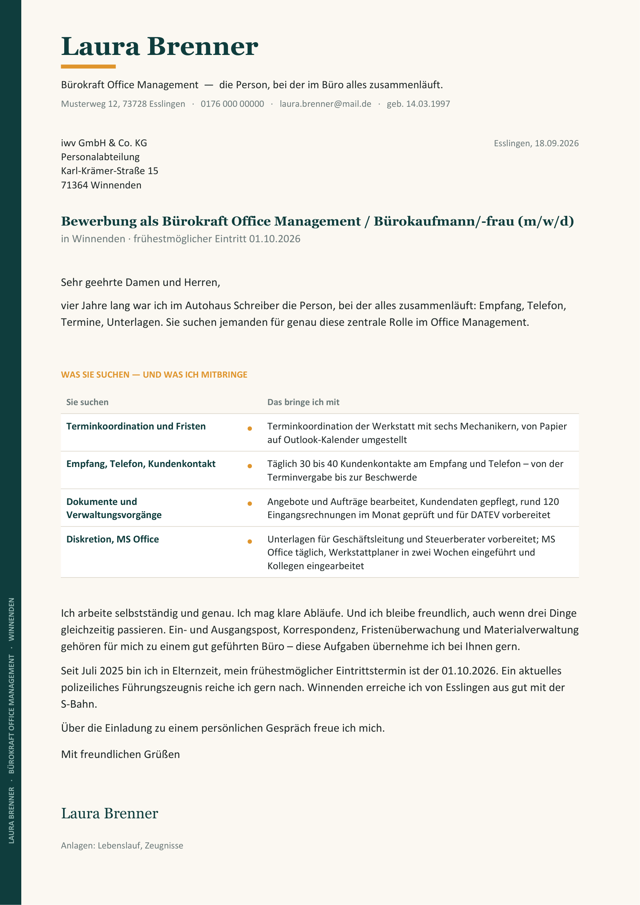
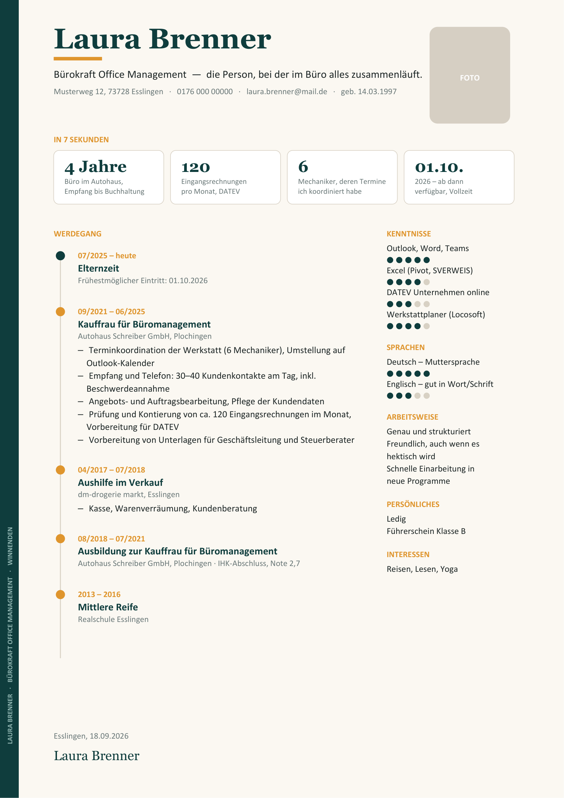

7 Sekunden — die Bewerbung, die drei Personaler einlädt
Vorlage und die drei Prompts aus dem Video. Kostenlos, ohne Anmeldung, kein Abo.

Anschreiben als PDF
Lebenslauf als PDFDie Vorlage zeigt eine erfundene Person. Alles, was du übernimmst, muss bei dir stimmen — die KI erfindet nichts, und du auch nicht.
So machst du es mit deiner Bewerbung — drei Prompts
Schritt 1: Öffne ChatGPT oder Claude. Häng deinen Lebenslauf und dein Anschreiben als PDF an. Kopier die Stellenanzeige als Text unten in den Prompt.
Du bist Personaler. Du hast 7 Sekunden für diese Bewerbung (Lebenslauf und Anschreiben im Anhang), dann entscheidest du. Spiel das dreimal, als drei verschiedene Personen: 1. Personalleiterin in einem Familienbetrieb mit 80 Mitarbeitern 2. HR-Business-Partner in einem Konzern mit Bewerbermanagement-System 3. Gründer eines jungen Unternehmens, der selbst einstellt Für jede Person, genau in diesem Format: - Was ich in 7 Sekunden sehe: (ein Satz) - Entscheidung: EINLADUNG oder ABSAGE - Der Grund, den ich dir nie schreiben würde: (ein Satz, ehrlich) - Was du ändern müsstest, damit ich Ja sage: (ein konkreter Punkt) Danach eine Zeile: Wie viele von drei laden ein? STELLENANZEIGE: (hier den Anzeigentext einfügen)
Schritt 2: Jetzt lässt du die KI neu schreiben. Trag Firma, Stelle, Ort und – wenn du eine Lücke hast – den echten Grund ein.
Jetzt die komplette Bewerbung neu, fertig zum Abschicken – Anschreiben und Lebenslauf. Regeln: - Firma, Stellentitel und Ort exakt aus der Anzeige: (Firma), (Straße), (PLZ Ort), (Stellentitel). - Die Wörter der Anzeige für meine Tätigkeiten verwenden. - Falls es eine Lücke im Lebenslauf gibt: der Grund ist (dein echter Grund). Das kommt als eine ehrliche Zeile in den Lebenslauf und als ein Halbsatz ins Anschreiben, nicht mehr. - Eintritt ab (Datum). - Nichts erfinden, was nicht im alten Lebenslauf steht. Zahlen aus dem alten Anschreiben behalten. - Anschreiben maximal eine Seite, kurze Sätze, kein „hiermit bewerbe ich mich“, kein „teamfähig und belastbar“. Gib zuerst das Anschreiben komplett aus, dann den Lebenslauf komplett (alle Abschnitte).
Schritt 3: Gegenprobe.
Jetzt bewerten alle drei Personaler die neue Bewerbung nochmal in 7 Sekunden, gleiches Format wie in der ersten Runde. Am Ende eine Zeile: Wie viele von drei laden jetzt ein?
Die KI würfelt ein bisschen. Wenn das Ergebnis wackelt, lass Prompt 3 zweimal laufen und nimm, was beide Male genannt wird. Die Gründe sind stabil, die Zahl nicht.
Woran der Personaler in 7 Sekunden hängen bleibt
- Firma und Stellentitel exakt wie in der Anzeige (sonst Serienbrief).
- Jede Lücke über drei Monate mit einer ehrlichen Zeile.
- Keine Floskeln — jede Eigenschaft mit einer Zahl oder einem Beispiel.